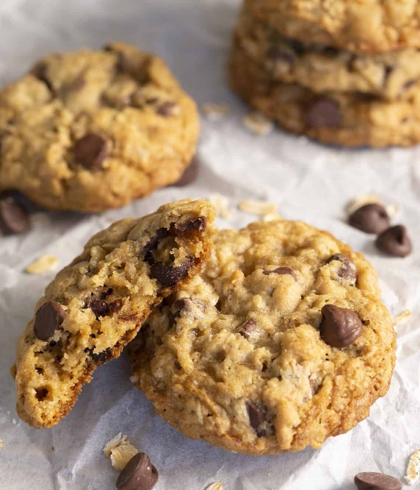

Home
Oatmeal Chocolate Chip Cookies Recipe
Credit: Preppy Kitchen

Description
A perfect easy recipe for a simple dessert after dinner. These cookies are just
the right amount of sweet mixed with some salt to balance it out. It has a crispy
outside and a chewy inside.
Ingredients
- 1 cup or 120g all-purpose flour
- 1/2 tsp or 3g baking soda
- 1/2 tsp or 5g salt
- 1/2 cup or 113g room temperature unsalted butter
- 1/3 cup or 65g granulated sugar
- 2/3 cup or 140g packed light-brown sugar
- 2 tsp or 10mL pure vanilla extract
- 1 large egg
- 1 1/2 cups or 135g rolled oats
- 1 cup or 150g semisweet chocolate chips
Steps
-
In a medium bowl, whisk together the flour and baking soda; set aside.
-
Combine the butter with both sugars; beat on medium speed until light
and fluffy.
-
Reduce speed to low; add the salt, vanilla, and eggs. Beat until well mixed,
about 1 minute.
-
Add flour mixture; mix until almost combined.
-
Stir in the oats and chocolate chips. Chill dough for one hour to overnight.
-
Preheat oven to 375 degrees.
-
Use a small ice cream scooper (two tablespoons) to drop heaping tablespoon-size
balls of dough about 2 inches apart on baking sheets lined with parchment paper.
-
Bake until cookies are golden around the edges, but still soft in the center, 8
to 10 minutes
-
Remove from oven, and let cool on baking sheet 1 to 2 minutes. Transfer to a wire
rack, and let cool completely.